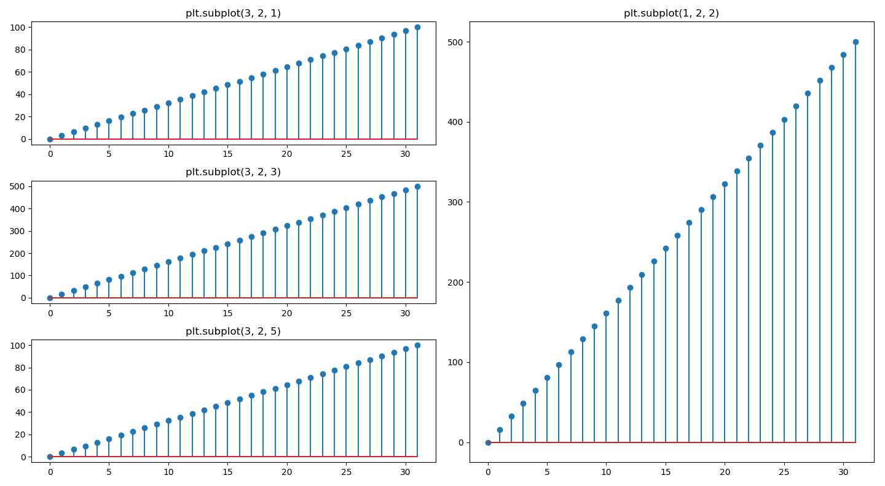
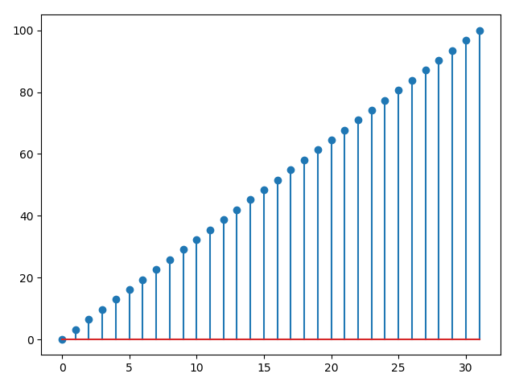
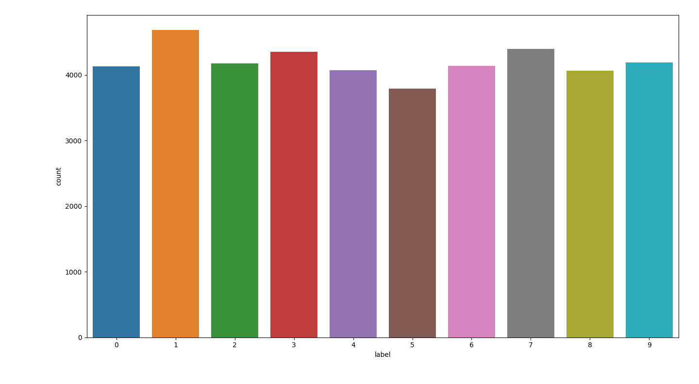

环境
1 | Python 3.8.0 |
1. 内建函数
range 列表
创建一个整数列表
1 | range(10) # 从 0 开始到 10 |
list操作
判断某个值是否在list中
1 | test_list = list(xxxx) |
filter过滤器
删除list中空值和nan
1 | # python3中filter返回迭代器，需要使用list()转化回list |
map向量对应计算
- 两个同样长度的向量，每个元素按照function计算
1 | a = [1, 2, 3, 4] |
zip向量对应打包
- 两个同样长度的向量，每个元素打包到一起
1 | a = [1, 2, 3, 4] |
reduce向量挨个计算
- 两个同样长度的向量，每个元素进行计算，结果和下个元素进行计算
1 | a = [1, 2, 3, 4] |
dict操作
dict合并
1 | dict1 = {"a": 1, "b": 2} |
2. 第三方module
2.1. pandas
csv格式文件读写
- 可以使用
read_csv()函数将csv读入成dataframe的格式 - 用
to_csv()将dataframe写入到csv文件中
1 | import pandas as pd |
dataframe相关操作
dataframe本质上多个相同索引的series组成的数据结构
信息
1 | import pandas as pd |
操作
- 一般df会改变数据的方法都有一个参数inplace，为True的时候改变原数据，为False的时候不改变原数据
1 | import pandas as pd |
- 遍历
1 | # 行遍历 |
- 数据对比
1 | # 比较两个数据 |
转换
1 | # list或者ndarray转成dataframe |
series相关操作
类似于python自带的dict类型
信息
1 | import pandas as pd |
list操作
1 | # 查 |
写入excel
不显示表头和索引
1 | # header=None 不显示表头，index=False 不显示索引 |
写入同一文件多个sheet
需要安装openpyxl，默认使用此module
1 | writer = pd.ExcelWriter("output.xlsx") |
出现非法字符问题，可以换用xlsxwriter作为写入
1 | writer = pd.ExcelWriter("output.xlsx", engine='xlsxwriter') |
2.2. numpy
内置函数
argmax获取最大值的位置
1 | import numpy as np |
numpy数据存取
numpy有一个可以直接将numpy数组矩阵按照原来的格式储存和读取的函数
1 | import numpy as np |
这个方法可以直接将shape也存下来，不需要考虑格式、类型等，缺点是文件会有点大。
ndarray 矩阵
reshape 重置矩阵形状
从最外层开始重置矩阵形状，默认按行读取，-1代表未知数量，由numpy自动计算
1 | test_ndarray = test_ndarray.reshape(-1, 28, 28, 1) |
随机数
- 随机种子
1 | import numpy as np |
linespace 列表
1 | import numpy as np |
2.3. matplotlib
pyplot 画图
新开一个页面 figure
1 | import matplotlib.pyplot as plt |
一页多图 subplot
1 | import matplotlib.pyplot as plt |
效果图

页面属性更改
1 | import matplotlib.pyplot as plt |
stem 散点图
1 | #coding=utf-8 |
效果图

2.4. seaborn
画图统计向量中值的出现次数 countplot
1 | import matplotlib.pyplot as plt |
效果图

2.5. scipy
fftpack
fft 快速傅里叶变换
1 | from scipy.fftpack import fft |